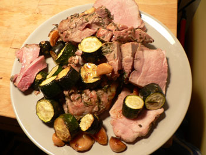
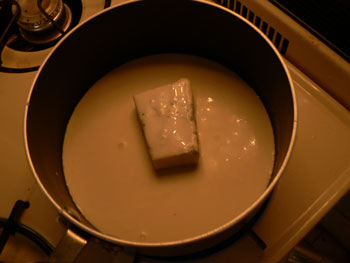

Pork and gorgonzola risotto
On Sunday night, Emily B. and two of her friends came over for an early dinner. I decided to make the pork roast that I’m so fond of, this time with garlic and rosemary stuffed into it.

I really had trouble getting this thing cooked all the way through, as maybe you can see. Even after an hour, it was still pink in the middle, despite my oven’s tendency to be hot. In the end we decided to just eat it pink. Better rare than overcooked with pork, or with any meat really. Rare pork can’t kill me, can it?
I also made a bizarre dish called Risotto al gorgonzola from last month’s Gourmet. I can’t find the recipe online, but here was part of the preparation:

That’s six ounces of gorgonzola dolce in a cup and a third of heavy cream. Also involved were six tablespoons of butter and an ounce of parmesan. This was the creamiest, most ridiculous thing I’ve ever made or eaten. Everybody loved it, but I could only handle a few bites. If I make it again, I’ll substitute broth for some of the cream.
Comments
Hmmm…they are serving and eating pork on the pink side these days but I think it’s because they’ve bred the darn stuff so lean that it’s dry and tough when you cook it well done. I miss the juicy pork of my youth with its crisp fat.
I, for one, am not fond of rare pork, or rare duck, or rare fish. I do like certain cuts of lamb rare, and beef should be served rare if it’s a good cut, but not blue for crying out loud!
I agree that 1 1/2 c. of heavy cream is too rich and I never thought I’d say that about any dish, Pennsylvania Dutch girl that I am! I would substitute stock and finish with about 1/2 c. of heavy cream along with the cheeses. That’s a lot of gorgonzola, too.
—Mom
Yes, definitely less cream next time. There can be too much of a good thing. At the end of the recipe they tell you casually to add four more tablespoons of butter. I cheated and only added two.
Add a comment